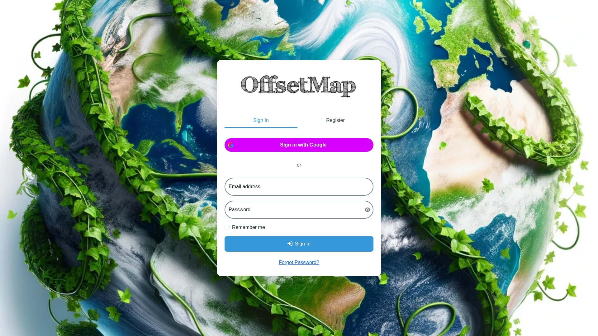

Four products spanning carbon data, environmental research and travel technology — each shaped around making complex choices easier to understand and use.
See the workSelected Work
OffsetMap
2023 — PresentCarbon markets
A web application designed to help people work with intricate carbon-offset data through clear, interactive maps and visualizations.

- Oversee the full application lifecycle: development, enhancement, maintenance and product direction
- Manage complex global datasets and scalable performance as the user base grows
- Keep the application aligned with evolving offset standards, registry information and credit-retirement data
- Write and maintain Python, JavaScript and SQL while communicating with external stakeholders
SALSAV
2024 — 2026Research
A custom website for Greg Baron-Gafford’s University of Arizona research group, created to communicate agrivoltaics research through interactive visual formats.


- Interactive maps that give geographic context to the group’s research
- Animations that explain relationships within agrivoltaic systems
- Interactive graphs that showcase findings from recent studies
- A public-facing structure designed for researchers, partners and non-specialist audiences


AV sin
Fronteras
2024 — 2026Platform
A seminar-series platform supporting agrivoltaics exchange across the Americas, designed to help participants discover research, connect with one another and continue conversations beyond each event.
- Interactive networking tools designed to catalyze engagement
- A comprehensive paper-recommendation engine for continued learning
- Interactive maps that situate participants and research across the region
- Interactive forums that support discussion around seminars and publications
NomadSwipe
Sep 2025 — PresentTravel tech

A travel-planning product built around swipe-based discovery and map-based organization. I founded NomadSwipe in September 2025 and own the product end-to-end.
- Lead product strategy, design, architecture and day-to-day development
- Build the mobile application in React Native and handle the supporting full-stack systems
- Own the interface, recommendation logic, maps, testing, releases and maintenance
- Continue to develop and iterate on the product as an active founder project